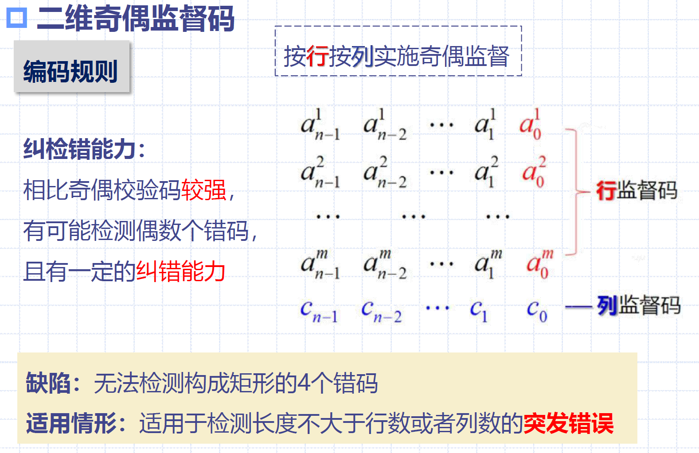
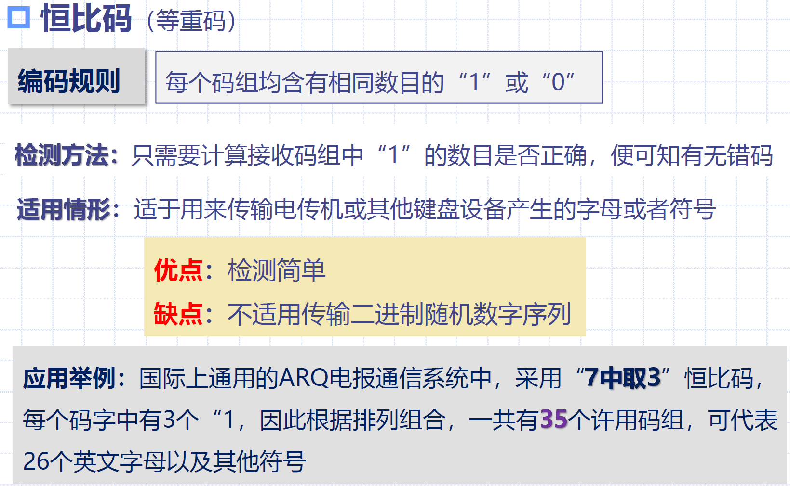
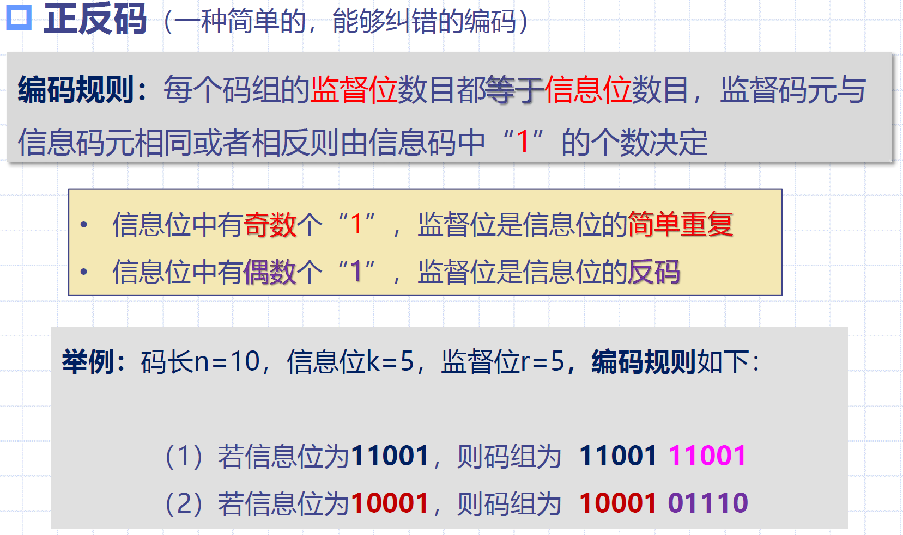
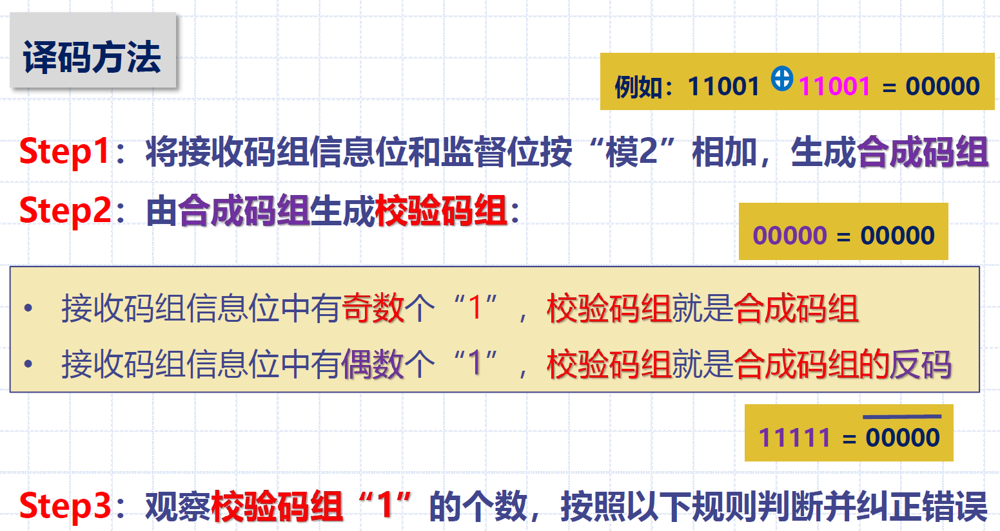
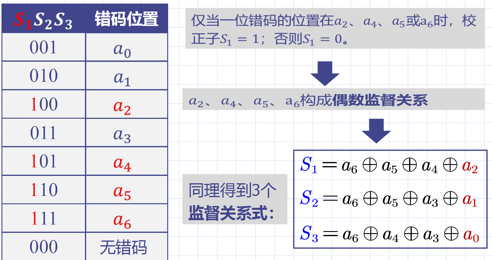
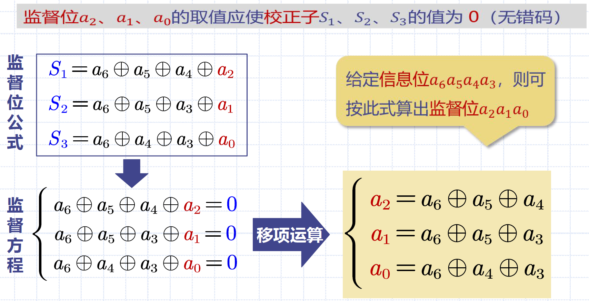
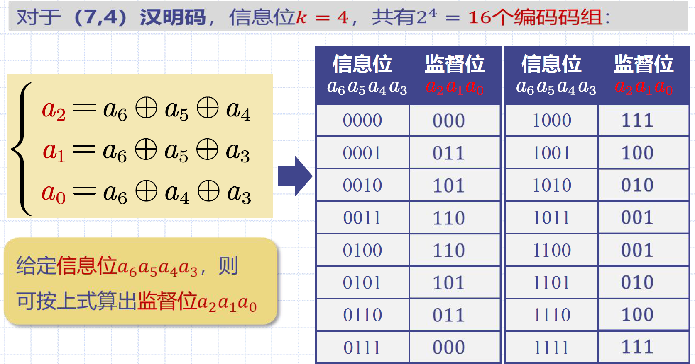
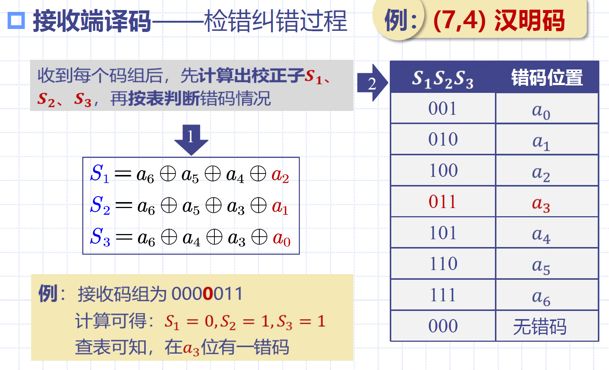
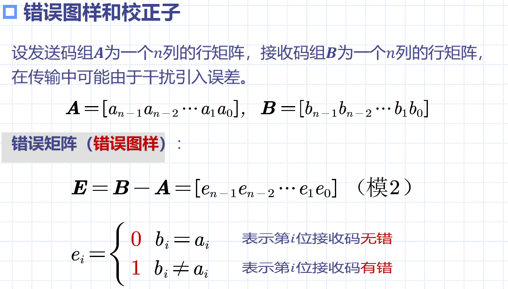

11 差错控制编码
11.1 概论
传输误码：通信中由于存在干扰（加性、乘性）使传输数据流产生误码
- 针对乘性干扰：均衡
- 针对加性干扰：
- 选择合适的调制解调方案，增大发射功率
- 差错控制、交织等
信道类型：
- 随机信道：错码出现随机且有统计规律
- 突发信道：错码成串集中出现
- 混合信道：既有随机错码，又有突发错码
差错控制方式：
- 检错重发 => 自动要求重发ARQ
- 前向纠错 => 加入差错控制码元FEC
- 反馈校验
- 检错删除
自动要求重发系统（ARQ）：
- 三种ARQ系统：
- 停止等待ARQ系统：在发送下一个码组前，等待来自接收机的ACK/NAK
- 特点：半双工，效率低
- 拉后ARQ系统：连续发送，直到收到某一组的NAK，退回并从该组重发
- 特点：传输速率比停止等待ARQ高，但需要双工信道
- 选择重发ARQ系统：：仅重发出错码组
- 特点：效率进一步提高
- 特点：
- 优点（相比FEC）：
- 监督码元较少即可将误码率降到很低
- 检错计算复杂度低
- 检错编码和加性干扰的统计特性基本无关，可适应不同特性信道
- 缺点：
- 需要双向信道重发，不能用于一对多的通信系统
- 重发导致ARQ系统传输速率降低
- 信道干扰严重时，可能发生不断重发引起的事实上的通信中断
- 系统原理：
- 编码器：对输入信息码元进行分组编码（增加监督码元），发送并暂存于缓冲存储器
- 译码器：
- 若检出错码，则发送重发指令，使发送端的重发控制器控制缓冲存储器重发
- 若未检出错码，则发送不重发指令，发送端发送下一妈祖，缓冲存储器内容更新
- 接收端仅当解码器认为接收码元正确时，才将信息码元发送给收信者，否则在输出缓冲存储器中删除接收码元
11.2 纠错编码的基本原理
差错控制编码（纠错编码）：在发送的信息码元中增加冗余码元（监督码元），监督码元与信息码元之间存在数学约束关系，接收端可利用数学关系发现或纠正误码
- 引入冗余（监督码元）可以使编码具有检错和纠错能力
- 冗余越多，付出代价越多，纠错和检错能力越强
- 多余度：增加的监督码元多少
- 若每两个码元增加一个监督码元，则编码多余度为1/3，编码效率为2/3
编码效率（码率） & 冗余度：
- 编码效率（码率）：\(R_c=\frac{k}{n}\)，k为信息码元位数，n为编码后码元总位数
- 冗余度：监督码元(n-k)与信息码元位数k之比
- 差错编码以降低传输的有效性为代价，提升传输的可靠性
分组码：将信息码每k个分为1组，按照一定规则，为每组信息码附加r个监督码的编码称为分组码，编码后每组长度为n=k+r
- 分组码符号表示：(n, k)
- 码重：码组中1的个数
- 码距（汉明距离）：两个码组中对应位上数字不同的位数
- 最小码距：某种编码中个码组之间距离最小值
码距与纠检错能力：
- 对于(n, k)分组码的纠检错能力，有以下结论：
- 检测e个错码，要求最小码距\(d_0\geq e+1\)
- 纠正t个错码，要求最小码距\(d_0\geq 2t+1\)
- 检测e个错码、纠正t个错码，要求最小码距\(d_0\geq e+t+1, \ \ e>t\)
11.3 纠错编码的性能
纠错编码系统带宽与信噪比之间矛盾：
- 监督码元导致发送序列增长，为了保证信息码元速率不变，需要增大传输速率，从而增大了系统带宽
- 系统带宽的增长引起噪声功率的增长，信噪比下降，反而使接收码元中错码增加
- 一般而言，使用纠错编码后误码率能得到改善，改善程度与所用编码有关
- 主要应用于功率受限但带宽不太受限的信道环境
传输速率与信噪比：\(\frac{E_b}{n_0}=\frac{P_s T}{n_0}=\frac{P_s}{n_0(1/T)}=\frac{P_s}{n_0R_B}\)
- 若希望提升传输速率，则势必使信噪比下降，误码率增大
11.4 简单的实用编码
奇偶校验码：

二维奇偶监督码：

恒比码（等重码）：

正反码：




11.5 线性分组码
11.5.1 基本概念
基本概念：
- 代数码：建立在代数基础上的编码（奇偶监督码）
- 线性码：按照每一组线性方程构成的代数码，即每个码字的监督位时信息位的线性组合
- 分组码：每一码组的监督位仅与本组的信息位有关
- 线性分组码：按照一组线性方程构成的分组码
监督位与错误位置的关系：对于(n, k)线性分组码，若希望用\(r=n-k\)个监督码构造出r个监督关系式来指出一位错码的n种可能位置，则r需要满足：\(2^r-1\geq n\)或\(2^r\geq k+r-1\)
- r个监督关系式能够指示一位错码的\((2^r-1)\)个可能位置
11.5.2 汉明码
汉明码：当\(2^r-1=n\)时，构造的线性分组码称为汉明码
- \((n,k)=(2^r-1,2^r-r-1)\)
- 纠1位错的高效的线性分组码
(7, 4)汉明码的构造：




汉明码的检错纠错：

汉明码的特性：
- 监督位数：\((n,k)=(2^r-1,2^r-r-1), \ \ r\geq 3\)
- 最小码距：\(d_0=3\) => 纠1或检2
- 编码效率：\(R_c=\frac{k}{n}=\frac{n-r}{n}=1-\frac{r}{n}\)
- 当n很大r很小时，\(R_c\approx 1\)
11.5.3 监督矩阵H与生成矩阵G
线性码：按照一组线性方程构成的代数码，即每个码字的监督位时信息位的线性组合
监督矩阵H & 生成矩阵G：
- 监督矩阵H给定，则编码时监督位和信息位的关系就完全确定
- 生成矩阵给定，则编码的方法就完全确定
- \(G=[I_k \ Q]\)称为典型生成矩阵
- \(H=[P \ I_r]\)称为典型监督矩阵
- 系统码：由典型生成矩阵得出的码组A中，信息位的位置不变，监督位附加其后
\[
\begin{align}
&H=\begin{bmatrix}
1 & 1 & 1 & 0 & \vdots & 1 & 0 & 0 \\
1 & 1 & 0 & 1 & \vdots & 0 & 1 & 0 \\
1 & 0 & 1 & 1 & \vdots & 0 & 0 & 1 \\
\end{bmatrix}=[P \ I_r] \\
&P=\begin{bmatrix}
1 & 1 & 1 & 0 \\
1 & 1 & 0 & 1 \\
1 & 0 & 1 & 1 \\
\end{bmatrix} \\
&Q=P^T=\begin{bmatrix}
1 & 1 & 1 \\
1 & 1 & 0 \\
1 & 0 & 1 \\
0 & 1 & 1 \\
\end{bmatrix} \\
&G=[I_k \ Q]=\begin{bmatrix}
1 & 0 & 0 & 0 & \vdots & 1 & 1 & 1 \\
0 & 1 & 0 & 0 & \vdots & 1 & 1 & 0 \\
0 & 0 & 1 & 0 & \vdots & 1 & 0 & 1 \\
0 & 0 & 0 & 1 & \vdots & 0 & 1 & 1 \\
\end{bmatrix} \\
&\begin{bmatrix}a_6 & a_5 & a_4 & a_3 & a_2 & a_1 & a_0\end{bmatrix}
\cdot H^T =
\begin{bmatrix}0 & 0 & 0\end{bmatrix}\\
&\begin{bmatrix}a_6 & a_5 & a_4 & a_3\end{bmatrix}
\cdot Q =
\begin{bmatrix}a_2 & a_1 & a_0\end{bmatrix}\\
&\begin{bmatrix}a_6 & a_5 & a_4 & a_3\end{bmatrix}
\cdot G =
\begin{bmatrix}a_6 & a_5 & a_4 & a_3 & a_2 & a_1 & a_0\end{bmatrix}
\end{align}
\]


错误图样和校正子：


(n, k)线性分组码译码步骤：
- 由接收的码组B计算\(S=B\cdot H^T\)
- 由S找到错误图样E
- 由公式A=B+E得到译码器输出码组
注：在错码较多时，超出检错能力时，接收码变为另一许用码组，即\(B\cdot H^T\)仍然成立，但该错码不可检测
线性分组码性质：
- 封闭性：一种线性码中的任意两种许用码组之和仍为许用码组
- 最小距离：码的最小距离即为码的最小重量（除全0码）
11.6 循环码
详见教材P344
11.7 卷积码
详见教材P354